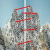
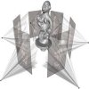

| Learn how to setup OpenCV-Python on your computer! |
 |
Here you will learn how to display and save images and videos, control mouse events and create trackbar. |
 |
In this section you will learn basic operations on image like pixel editing, geometric transformations, code optimization, some mathematical tools etc. |
 |
In this section you will learn different image processing functions inside OpenCV. |
Feature Detection and Description
|  | In this section you will learn about feature detectors and descriptors |
| In this section you will learn different techniques to work with videos like object tracking etc. |
Camera Calibration and 3D Reconstruction
|  | In this section we will learn about camera calibration, stereo imaging etc. |
 |
In this section you will learn different image processing functions inside OpenCV. |
 |
In this section you will learn different computational photography techniques like image denoising etc. |
| In this section you will object detection techniques like face detection etc. |
| In this section, we will see how OpenCV-Python bindings are generated |
{kind=link}
{kind=link}
{kind=link}
{kind=link}